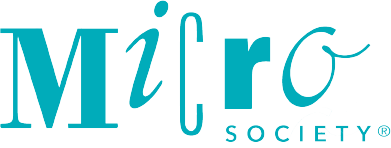

Hi, I'm Alan! I am a sophomore at Drexel University majoring in Computer Science.
Hi, I'm Alan! I am a sophomore at Drexel University majoring in Computer Science.
Right now, I am working with MicroSociety as their E-learning Coordinator for the Fall/Winter co-op!
Programming, sports, games, and movies/TV shows are some of my passions.
I started this website to improve my skills on web development and to display my interests.
 MicroSociety is an educational model that focuses on putting more power to the students in terms of their learning.
No more traditional textbook learning as, through the creation of miniature societies, kids K-8 learn real-life lessons.
They develop into leaders, entrepreneurs, and confident citizens of their own society.
You can click the link below to go to their website and learn more about their mission!